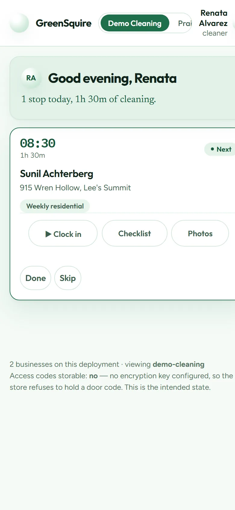
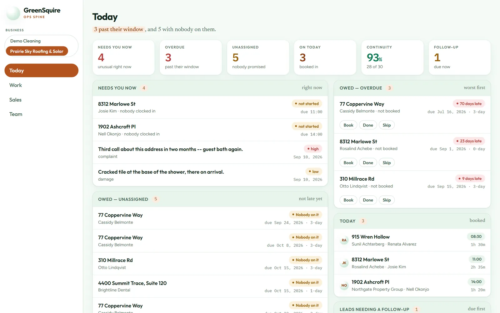
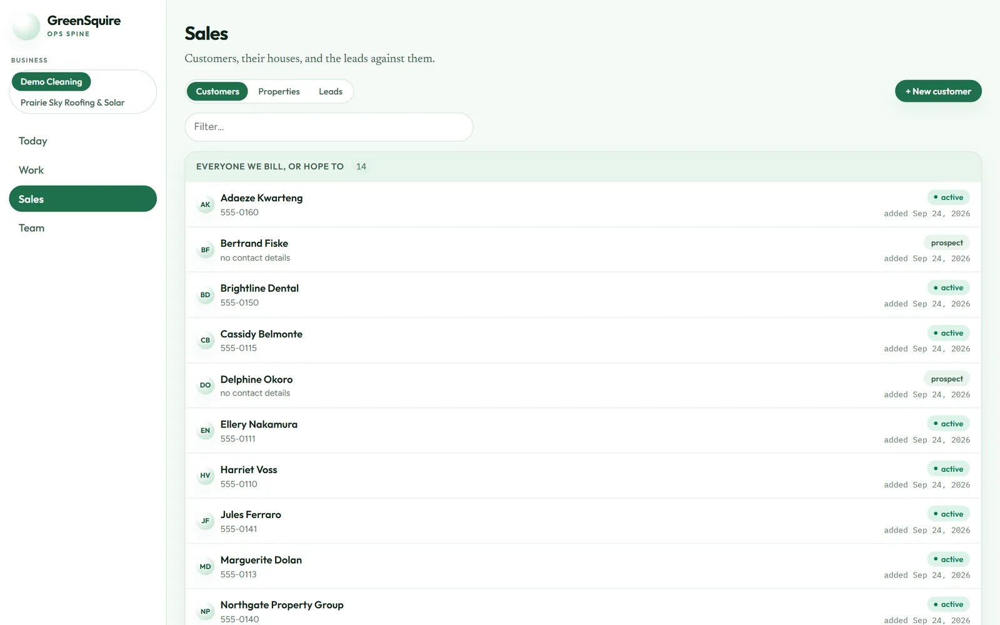

The system that runs a cleaning company.
I co-own a small residential and commercial cleaning business. Service businesses like ours tend to run on a whiteboard, a group text, and someone's memory. This app replaces all three: who we clean for, who's going where today, what got done, what we're owed, and what we owe the crew.


Every name, address and number here is made up. The demo business ships with invented customers.
The owner's morning, on one screen
What needs you right now, which visits are past the window we promised, which jobs have nobody on them, and who's booked today. It even tracks continuity: how often a customer gets their regular cleaner, because that's what keeps customers around.
"3 past their window" is the first thing you read. That's on purpose.
The crew's day, on their phone
A cleaner sees only their own stops. They clock in (with GPS, so the time lines up with the place), work through the checklist, snap before-and-after photos, and mark the visit done. That one tap raises the bill, so finished work never falls through the cracks.
Each role sees what it needs and nothing more: owner, manager, sales rep, or cleaner. A cleaner can't see a colleague's pay, and the server enforces that, not just the screen.

One app, any number of businesses
This was designed in from day one. Every business gets its own separate database file. Backing one up means copying one file, and removing one means deleting it. Adding a new business is a single command.
Flip the switch. "Prairie Sky Roofing & Solar" is a made-up second business running on the same install, and you can see it in the sidebar of both. It's seeded with the same demo records, and the orange is a paint job for this picture (per-business branding is the next small step). The separation underneath is the real thing.

Money: get paid, pay people, know who's profitable
A completed visit becomes a charge. Payments are recorded against it, and statements show a running balance. Payroll comes straight from the clock, with overtime calculated the way federal law actually requires. Then comes the question every owner wants answered: which customers actually make us money?
It also watches for drift: one missed visit is "drifting," two is "stalled." That's the quiet way customers leave, so the app flags it before you notice they're gone.
Under the hood
- Python + Flask + SQLite, one database per business plus a small control database that lists them. Every page and API route lives under
/t/<business>/, and nothing can read across. - Schedules are promises, not calendar rows. "Every other Tuesday" is stored as a standing obligation, and visits are worked out from it. Late, unassigned and missed visits are always computed fresh, so the numbers are right even on a machine that was off for a week.
- Properties are keyed to county parcel IDs, the county's own identifier for a piece of land, so an address typed three different ways is still one house.
- The ledger only ever adds rows. A balance is always the sum of its charges and payments, never a stored number that can drift. Corrections are reversing rows, like real bookkeeping.
- Door codes are encrypted at rest. With no encryption key configured, the app refuses to store them at all rather than falling back to plain text.
- 1,078 automated tests. Plus a demo mode with one-click logins for each role, which is how these screenshots were taken.
Built so the numbers can't quietly drift. The books only ever add rows. A balance is always worked out from the charges and payments behind it, never typed in or stored where it could fall out of step, and a correction is a new reversing entry, just like real bookkeeping.
Anything that touches money gets two kinds of checking: over a thousand automated tests, and a separate line-by-line review that hunts for the cases nobody thought to test. That happens before a single real customer is ever in it.
Could this work for you?
Most service businesses share the same bones: crews, jobs at addresses, photos as proof, a promise of when, and getting paid. That's why this was built to hold more than one business from day one.